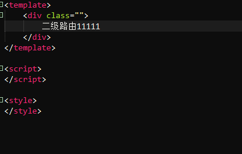
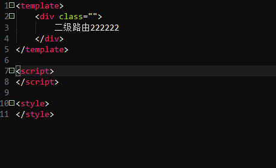
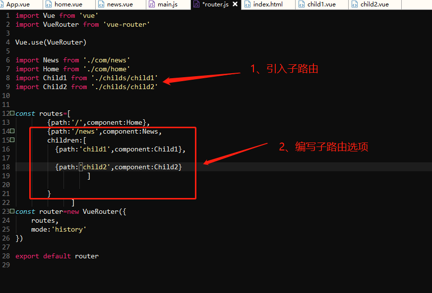
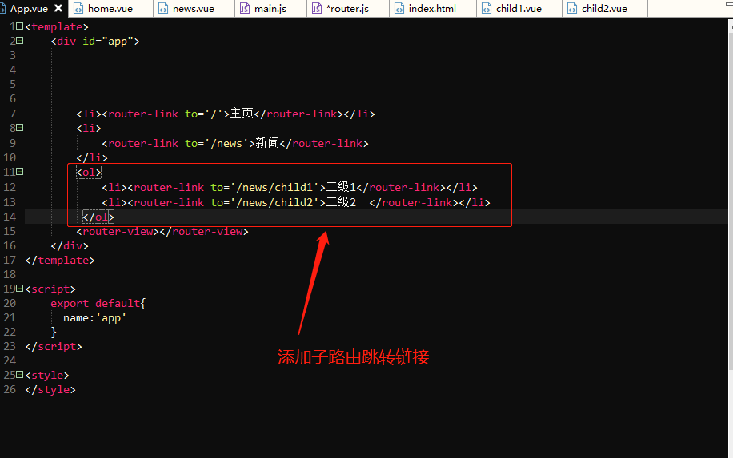
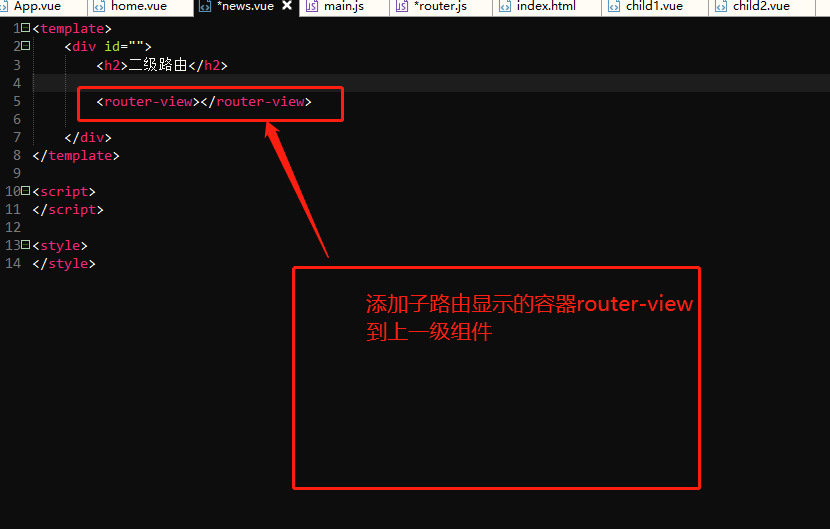

实现路由嵌套步骤：
第一步、编写需要嵌套的子路由：


第二步、编写路由文件：
1、引入子路由
2、在routes数组中路由路径的选项中，给需要嵌套子路由的路由选项在component后面增加一个children数组，数组内就按照编写路由选项相同的格式编写子路由的path等选项，例如：
const routes=[
{path:'/',component:Home},
{path:'/news',component:News,
children:[ //子路由配置
{path:'child1',component:Child1}, //子路由配置
{path:'child2',component:Child2} //子路由配置
]
}
]

第三步：编写App.vue:
在App.vue中一级路由的router-link的后面编写子路由的router-link标签，注意属性to的值，是从/后面开始写

第四步：编写子路由显示容器router-view
在需要编写子路由的组件中编写router-view,这样点击子路由链接的时候，子路由的内容就会显示在这个路由上
